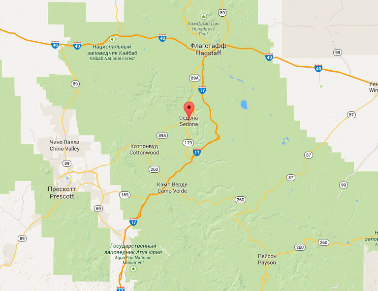

Информация
Фото и видео
Карта штата
Гостиницы
Заинтересовались?
Укажите предполагаемые даты поездки, и мы покажем Вам лучшие предложения гостинец в Седоне
Поиск гостинецы в Седоне
Дата заезда:
Дата выезда:
Взрослые:
Дети:
Найти
